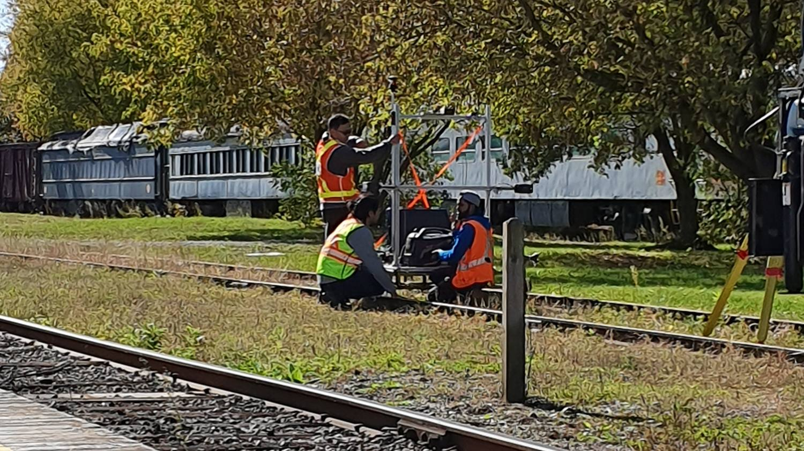
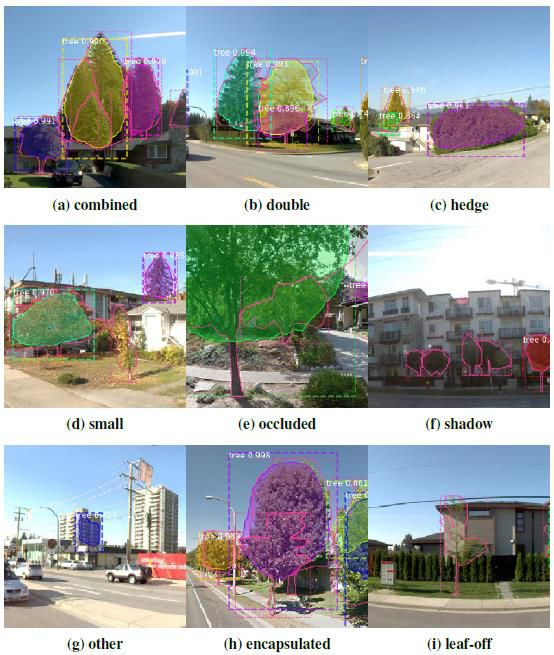
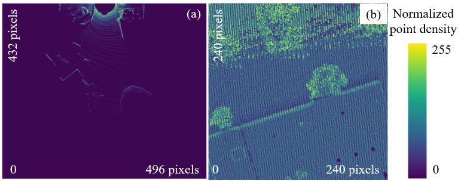

3D Vision and LiDAR
Airborne LiDAR, point cloud representations, volumetric modeling, detection workflows, and scene-level spatial reasoning.
LiDAR
Point Clouds
3D Vision
Detection
Selected work in LiDAR, computer vision, benchmark datasets, segmentation-oriented analysis, and research engineering workflows.
Airborne LiDAR, point cloud representations, volumetric modeling, detection workflows, and scene-level spatial reasoning.
Dataset design, annotation QA, benchmark protocol definition, comparative model analysis, and reproducible evaluation logic.
Technical experimentation, preprocessing pipelines, methodological synthesis, and publication-grade communication of results.
Data collection and pipeline work done on site, not from a desk.

Field data collection for object detection on rail: a camera, a Cepton LiDAR and radar mounted on a cart and run along a heritage railway across seven tests of two to four runs each.
From the thesis and the project report, with what each one is actually showing.




Introduced a large-scale aerial LiDAR benchmark dataset for semantic segmentation of urban forest scenes, supporting more standardized evaluation across deep learning methods.
Presented a large-scale annotated airborne LiDAR dataset of 5,000+ individually labeled tree instances, designed to establish a reproducible benchmark for single-tree detection algorithms.
Open linkDeveloped a volumetric deep CNN workflow for detecting individual trees from airborne LiDAR point clouds, with strong benchmark performance and a Best Master's Thesis award at York University.
Open link